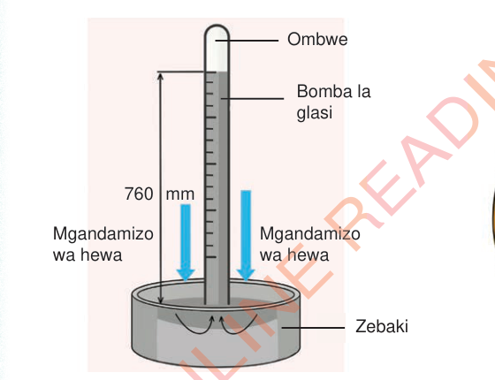
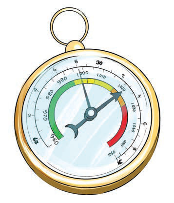
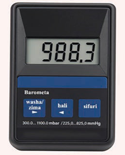

zebaki. Kiwango cha zebaki katika mrija hubadilika kulingana na kiwango cha mgandamizo wa hewa. Kiwango cha zebaki katika kipimio kikiwa juu inamaanisha mgandamizo wa hewa ni mkubwa na kiwango cha zebaki kikiwa chini inaamana mgandamizo wa hewa ni mdogo. Barometa ya zebaki ni kubwa na hutumika zaidi katika vituo vingi vya hali ya hewa ikilinganishwa na barometa ya aneroidi.
Barometa ya kidijitali ina saa ya atomiki inayotumia vitambuzi vya kielektroniki kupima mgandamizo wa angahewa. Barometa ya kidijitali hutoa taarifa ya mgandamizo wa angahewa kwa usahihi na kwa uharaka zaidi ikilinganishwa na barometa ya zebaki na barometa ya aneroidi. Kielelezo namba 6 kinaonesha barometa ya zebaki, aneroidi na kidigitali.


